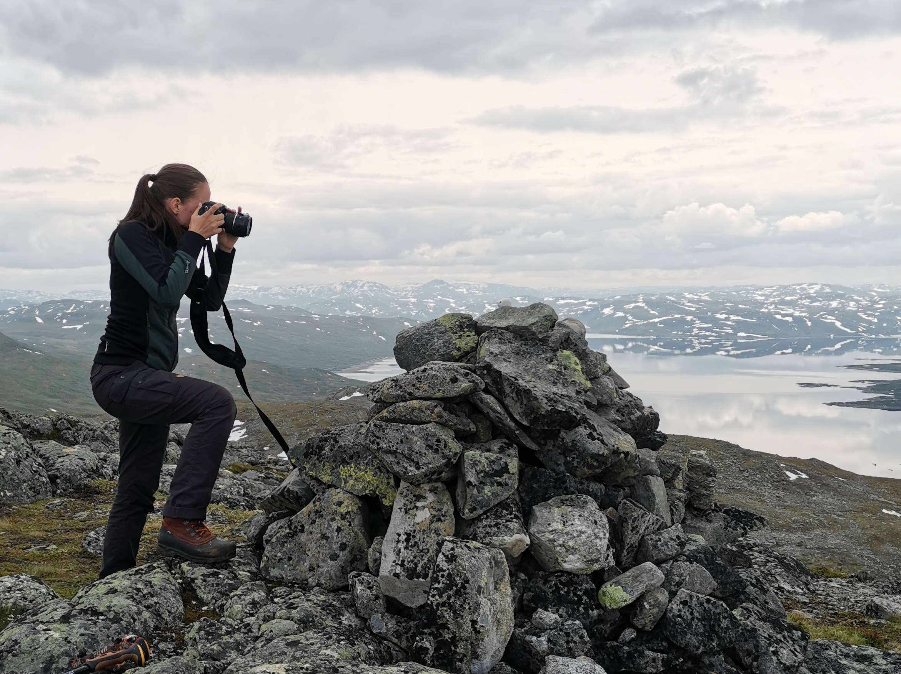
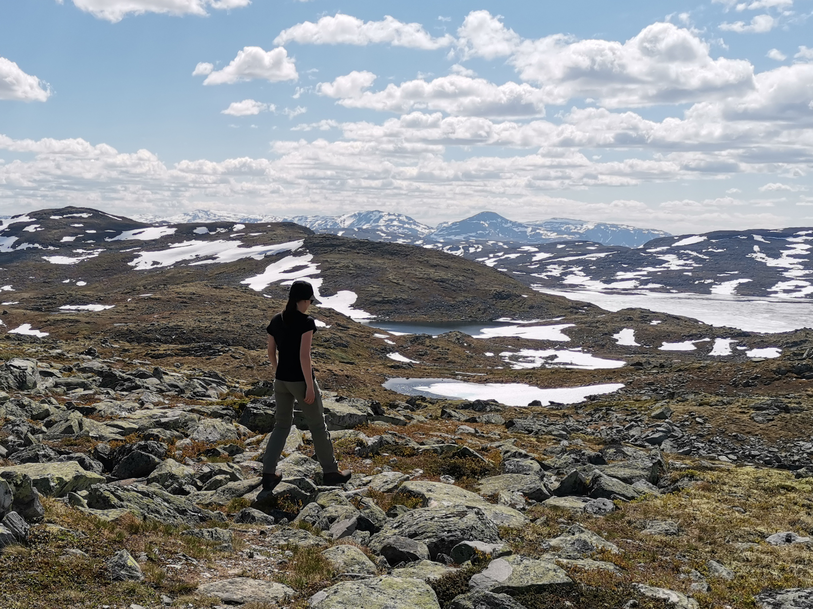

About me
Hi, I'm Alina!
I am an aspiring professional in sustainability, people & culture and data. I am convinced that we need data-driven insights and people as the agents of change to drive the sustainable transition that is at the heart of almost all of mankind's challenges. With my Master Degree in Business Administration within the subject Entrepreneurship, Sustainability and Social Change and my work experience in Human Resources, Diversity, Recruiting and Talent Management, I am on a mission to bring relationships, communication and data together to shape holistic sustainable change in society and organisations.
Let's work together for a sustainable present and future!
Professional skills
Hobbys

Photography
Playing the violin
Painting
Reading
Creative

Outside
- Hiking
- Traveling
- Road Bike
- Fishing

Social
- Meeting friends
- Movie nights
- Visiting concerts
- Playing games